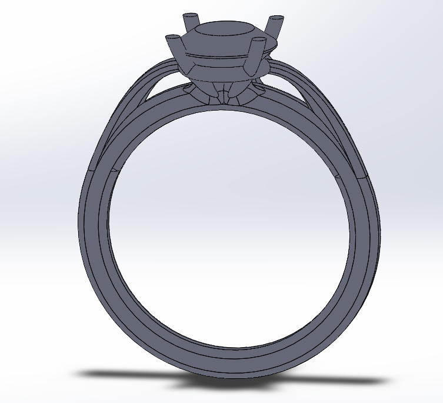

One man's journey to an engagement ring...
Creating a model
Likely the first step of this whole process is to turn abstract ideas and thoughts into concrete models. I stole Anika's pinterest account to stealthily check out the designs that Nisha was interested in. This however should always be supplemented with some discussions as most of the entries on her list were rose gold while the only opinion that I got from Nisha was that it definitely shouldn't be rose gold. Then a few hours of playing with designs and 3D printing the results left me with this model. Before Casting I slightly increased the OD and decreased the ID of the model to hopefully give me extra material to work with in case there were any casting defects (Spoiler alert there will definitely be casting defects).
Once a model was made I tried many different ways of creating a model to mold around. First I attempted to machine a wax model and finish it by hand. I imagine with further effort this would have worked fine but between the fine feature size, short endmills, and 3 axis limitation it would have taken a very long time, some fine tools that I don't have and maybe a higher quality wax. After machining the wax I spent quite a bit of time trying to 3D print a wax based filament. This warped like crazy and gave exceptionally poor results. After 2 weeks of fine tuning I decided to ditch that idea and hit the drawing board again. I settled on a hybrid PLA-wax model that I thought would burn out cleanly enough for my purposes. I printed the base model out of PLA at a relatively fine quality then spent some time with small needle files to clean up the fine details. The I used a low temp wax to create a seal coat over the model and remove the fine lines that were present due to the layered nature of 3D printing and spent some more time with the files to clean it up.



Creating a mold
With a model of the ring in hand now it was time to make a mold that I could cast the gold into. Most molds for precious metals are made with investment plaster. Once mixed this looks and feels almost like a slightly more liquid yogurt. First I had to add a wax sprue so that the metal would have a path to travel down to the ring. Normally people use ready made sprues for this job and cut them to length but as mine were delayed in shipping I chose to roll my own out of the same low temp wax that I used to seal the model. After mixing the plaster I put it through a few cycles in the vacuum chamber to pull any dissolved air out of the solution to prevent any small bubbles from appearing in the mold and causing casting defects. I ran the first attempt though a 500F broil cycle in the toaster oven to check if the wax and PLA would melt out. As expected the wax melts out but the PLA won't budge at that temperature. This did however start the process of removing all the moisture from the mold and hardening it.
The melting point of the 18K gold I'm using is between 1700 and 1900F so I borrowed a kiln from the Architecture department that capped out at 2000F and hoped that was high enough to pour at. I needed to redo the initial burnout at a higher temperature to get rid of the remaining PLA and any wax residue that may have been left. This is something like a 5 hour process hitting a peak temperature of 1350F to be sure that the mold is fully baked and all the contents have burned out. Once the burnout is done you need to bring the mold to the casting temperature of about 1000F for an hour. This was difficult as I had only one heat source to both heat the mold at 1000F and melt the gold at 2000F. I originally hoped that pulling the mold out at 1350 and letting it air cool while I melted the gold would put it at roughly the right temperature for the pour. This might have worked if the ring was a little further towards the center of the mold but likely due to too much mold cooling and gold that wasn't hot enough my first pour only penetrated the top ~25% of the mold before solidifying and blocking any further progress. For the second attempt I decided to knowingly overheat the mold up to the 2000F pouring point for the gold, relying on the short time table and relatively good insulating properties of the mold itself to keep the core at a less extreme temperature. This worked great and the only down side was an increased black residue, likely burnt plaster, that was adhering to the ring after I removed it from the mold.
I know it doesn't look that good right now... but just you wait


Finishing
There is a saying on my cork board at work that goes something like "The first 90% of the code takes 90% of the development time. The last 10% of the code takes another 90% of the development time." I think this also applies to most hand made things. In theory all I needed to do was remove the sprue, rough file the ring to shape and size, sand it smooth, set the stone, and buff it which is a pretty long list, quite a long sentence, and many many hours of work. Surprisingly this mostly went without issue. Filing is quite straight forward and with proper patience gives very good results. Then I came in with a large assortment of diamond grit dremel bits to get into the small crevices along the top riser to remove the burnt plaster and smooth out some small casting defects. Since the mold wasn't perfect the risers on either side aren't quite symmetric but they're good enough for me.
After the rough filing I switched to many different types and shapes of silicone wheels with differing grit sizes embedded in them. This was a relatively long iterative process but it was very satisfying as each step would increase the overall shine and make it look more like a ring. The different shapes of these tools were very useful for the different fine features of the ring and had the interesting progression of being great for one area when brand new then once they were used for a few minutes their shape would change making them perfect for another area. While the description for this step is pretty short there were a ton of hours invested into this. Any defects left at the end of your coarse sanding will undoubtedly carry over throughout the process and appear on the final surface so when you think you're done reset your timer and start again.

Stone setting
Now that everything is at its final size and relatively smooth the stone needs to be set. Somewhere along the way the stone ended up being a bit bigger than I thought it would. I'm still not quite sure whether I miscalculated the diameter of it or if this was an artifact of the 3D printer but I had to deal with it regardless of its origins. I started by liberally taping up a pair of needle nosed plyers to reduce any surface marring and slowly pulling all the prongs away from the center. Many people don't realize it but most stones are physically held in place by the prongs rather than using a glue or anything like that. To do this a profile matching the stone is cut into each prong generally through the use of a Hart Bur on a flex shaft. I don't have a flex shaft and they are just expensive enough that I chose not to buy one for this project leaving me with only a dremel to run the tool. While definitely not ideal for the job it is certainly capable of it as long as it is run slowly and with very minimal pressure. It is very easy to catch the prong and remove too much material which is very difficult to fix. For me it went relatively well with minimal accidental scratching. Once all the grooves are cut level the stone is placed inside and the prongs are alternatingly pulled in towards center to lock the stone in place. This was the first major issue that I ran into over the course of this project. Without any good reference I had to eyeball the locations of all the cuts and ended up with a stone that was something like 2 or 3 degrees from flat. I doubt that most people would be able to notice it but after I spotted it I couldn't let it be so I tried to loosen a prong and reset it. This was definitely a poor choice and resulted in one of the prongs shearing off once I attempted to bend it back in the second time. The only way to fix this is to solder a new tip onto the prong and begin again. I considered doing this myself with a small torch but I figured the odds of me being unable to focus the heat that much and inadvertently melting more of the prong than I intended was about 30% and I didn't want to take that risk. I searched for a jeweler and through a referral I ended up with Harry Gigian who has a laser to minimize any risk of over melting the prong and the skills of a lifetime of gold smithing to make sure that everything came out perfectly. He remove the stone for me, reinforced the 3 good prongs, and rebuilt the broken one then set the stone and gave it a quick buff which resulted in a finished ring.


The Proposal
Check back here once it occurs for some more details. Tentative plan is for Monday at the musuem of science
TBD
TBD
TBD